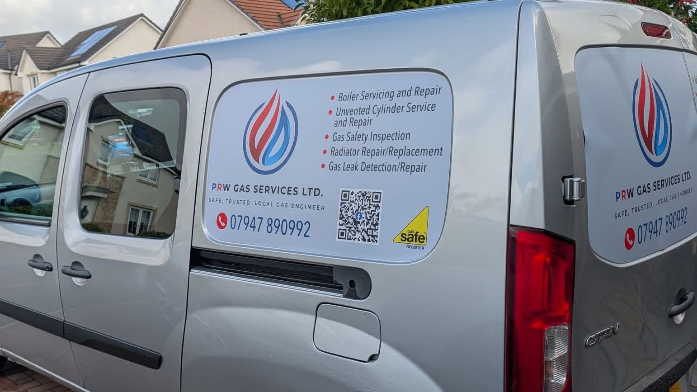
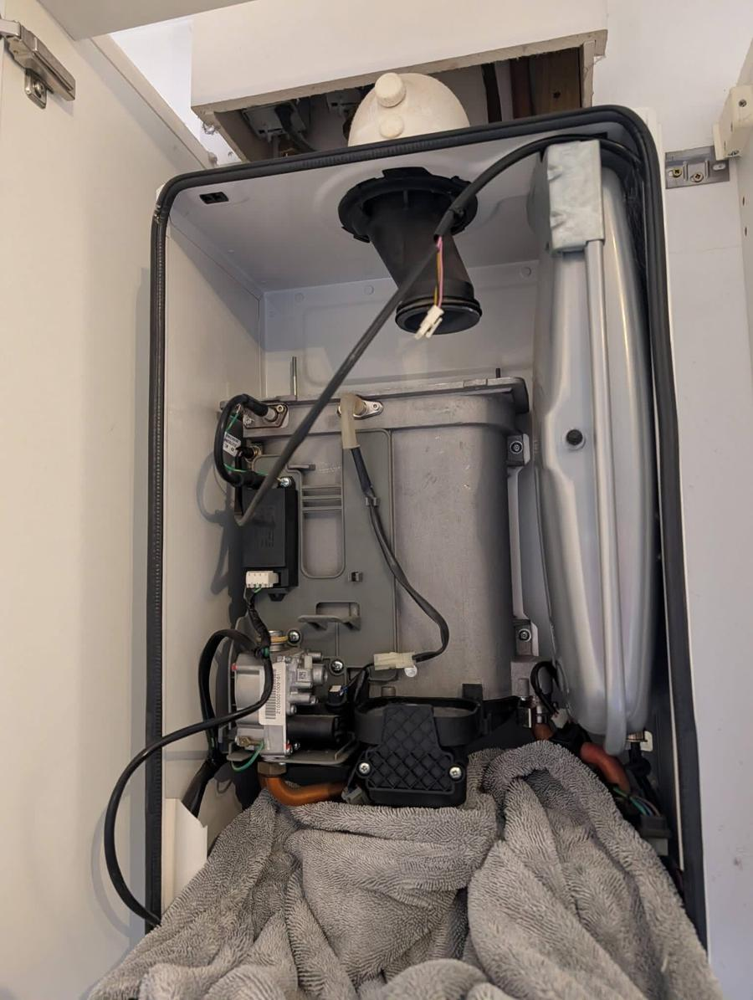

Before you start
- Use your own Google account, the Gmail you use for the business. You should be the owner. You can add me as a manager afterwards so I can help keep it up to date.
- Check you're not already on there. Search PRW Gas Services Ltd in Google Maps. If a profile already shows, tap Claim this business on it and don't create a second one.
- Have these to hand: the van, your Gas Safe ID card, and one document with the business name on it, such as an invoice or your insurance certificate.
Create the profile
Go to business.google.com/create and sign in. Google asks the questions below, roughly in this order. If the wording on screen is slightly different, pick the closest match.
Business name
Use the name exactly as it is on the van. Don't add words like "boiler repair Bishopton". Google treats that as breaking its rules and can take the profile down.
Business type and location
- Business type: choose Service business.
- "Do you want to add a location customers can visit?": choose No. You work in customers' homes.
- Google still asks for your address so it can check you're real. It stays hidden from the public.
Category
Start typing and pick from Google's list.
You can add more categories later, under Edit profile. These two fit:
"Heating contractor" sometimes shows as "Central heating service". If one isn't in the list, skip it. Only add "Plumber" if you want general plumbing jobs.
Areas you cover
Type each town and pick it from the list. You can add up to 20.
This list is my guess. Only add places you're happy to drive to, and tell me the final list so the website matches.
Phone and website
Only add the website once prwgas.com opens on your phone. If it isn't live yet, leave this box empty and add it later under Edit profile.
Prove it's your business
Google picks how it checks you. For a business with no shop it's usually a short video you film on your phone. Sometimes it's a code by text, email or post instead. Follow whatever Google shows on screen.
If it asks for a video, film this in one go
- Where you are: start outside and show your street sign or the entrance to your street.
- The van: walk to it and show the PRW signs on the side and back, including the phone number.
- That it's yours: unlock the van, open it and show your tools.
- Paperwork: show your Gas Safe ID card and one document with the business name on it.
- Keep recording the whole time. Don't stop, cut or edit.
- Keep customers' details and other people's faces out of shot.
- A minute or two is plenty.
Google's own checklist is here: verify your business with a video. If it differs from the list above, follow Google's.
Google then reviews it. That usually takes a few days, and you get an email when you're verified.
Fill the profile in
Search my business on Google while signed in, then tap Edit profile. Change anything below that isn't true about how you work.
Description
Google allows 750 characters and doesn't allow web links or offers in this box.
Opening hours
Put your real hours. Only list times when you'll answer the phone or reply to messages. Don't put 24 hours unless you take calls through the night.
Services
Under Services, tick any of Google's suggestions that match, then add the rest with Add custom service. Each one has a name and a short description. Prices are optional, so leave them blank for now.
Photos
Press and hold each photo, then choose Save to Photos. Upload them under Photos on your profile.






- The logo is a sharp, redrawn version of your own, so it stays crisp at any size.
- Add a new job photo every couple of weeks. Profiles with fresh photos get more calls.
- Keep customers, their belongings and their house numbers out of shot.
WhatsApp and booking links
Under Edit profile, then Contact, look for Chat. If it's there, choose WhatsApp and paste this. Not every profile has it yet, so skip it if you don't see it.
If you see Booking or Appointment link, paste this once prwgas.com is live:
Your first post
Tap Add update. Paste the words below, add the boiler service photo, and choose the Call now button.
Don't type your phone number into the post itself. Google can reject posts with phone numbers in them, and the button does that job.
Reviews
Google reviews are what move you up the map. Your Facebook reviews don't show on Google, so this starts from zero.
- On your profile, tap Ask for reviews (it may say Get more reviews).
- Copy the link it gives you and send it to me.
- I'll turn it into a card with a QR code to leave after each job, and a WhatsApp message you can send with one tap.
The rules
- Only ask people you've done work for. Friends and family who haven't been customers shouldn't leave one.
- Never offer money off in return for a review. Google bans it and removes reviews when it spots it.
- Reply to every review, even with one line.
Add me as a manager (optional)
On your profile, tap the three dots, then Business Profile settings, then People and access, then Add. Enter my email address, which I'll send you, and choose Manager. You stay the owner.
Three things not to do
- Don't add extra words to the business name.
- Don't use an address you don't work from, such as a virtual office or someone else's house.
- Don't change the name, category or address in the first few weeks unless you have to. Google can ask you to verify all over again.